Libro FOA · Capítulo 04
La fibra óptica
Propagación de la luz, tipos de fibra, atenuación, dispersión y especificaciones.
En este capítulo
Qué aprenderás
- Cómo transmite la luz la fibra óptica
- Tipos de fibra
- Características físicas de los distintos tipos de fibras
- Especificaciones de rendimiento de las fibras
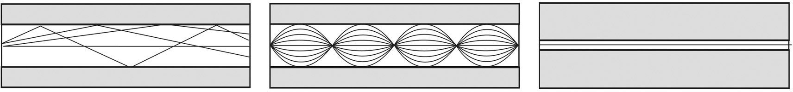
¿Qué es la Fibra Óptica?
La fibra óptica es el medio de comunicación que envía señales ópticas (luz) a través de hebras extremadamente puras de fibra de vidrio o plástico. La luz es "guiada" por el centro de la fibra, que se denomina "núcleo". El núcleo está rodeado por un material óptico llamado "revestimiento" que atrapa la luz en el núcleo mediante una técnica óptica llamada "reflexión interna total". La propia fibra está rodeada por una "cubierta" para protegerla de la humedad y los daños físicos. Esta cubierta o recubrimiento es lo que se retira de la fibra para terminarla o empalmarla.

El núcleo y el revestimiento suelen ser de vidrio ultra-puro, aunque algunas fibras son totalmente de plástico o tienen un núcleo de vidrio y un revestimiento de plástico. El núcleo está diseñado para tener un índice de refracción más alto que el revestimiento, un parámetro óptico que mide la velocidad de la luz en el material. El menor índice de refracción del revestimiento hace que los rayos de luz se curven al pasar del núcleo al revestimiento y provoca una "reflexión interna total" que atrapa la luz en el núcleo hasta un ángulo determinado, que define la "apertura numérica" de la fibra.
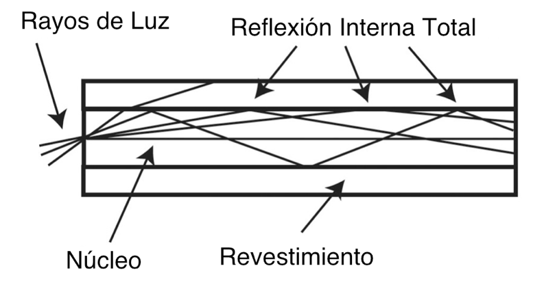
La fibra de vidrio está recubierta de un plástico protector llamado "recubrimiento primario" que la protege de la humedad y otros daños. Más protección es ofrecida por el "cable", el cual tiene las fibras y los elementos de resistencia dentro de una cubierta protectora exterior llamada "chaqueta exterior".
Fabricación de Fibra Óptica
La fabricación de fibra óptica con precisión sub-micrométrica es un interesante proceso que consiste en fabricar vidrio ultra-puro y estirarlo en hebras del tamaño de un cabello humano. El proceso comienza con la fabricación de un "preformado" (preformed), una varilla de vidrio de gran diámetro que tiene exactamente la misma sección óptica que una fibra, pero es cientos de veces mayor. El extremo de la varilla se calienta y se extrae una fina hebra de fibra del preformado, que se enrolla en grandes bobinas. Una vez fabricada, la fibra se prueba y se convierte en cable.
Tipos de Fibra
Tipos multimodo y monomodo
Los dos tipos básicos de fibra son la multimodo y la monomodo. Dentro de estas categorías, las fibras se identifican por sus diámetros de núcleo y revestimiento expresados en micrones (la millonésima parte de un metro), por ejemplo, fibra multimodo de 50/125 micrones.
La mayoría de las fibras tienen 125 micrones de diámetro exterior (un micron es la millonésima parte de un metro y 125 micrones son 0.005 pulgadas), un poco más que un cabello humano.
La fibra multimodo hace que la luz viaje por el núcleo en muchos rayos, llamados modos. Tiene un núcleo más grande (casi siempre de 50 o 62.5 micrones) que admite la transmisión de múltiples modos (rayos) de luz. La multimodo suele utilizarse con fuentes LED a longitudes de onda de 850 y 1300 nm (¡ver más abajo!) para redes de área local (LAN) más lentas y láseres a 850 (VCSEL) y 1310 nm (láseres Fabry-Pérot) para redes que funcionan a gigabits por segundo o más.
La fibra monomodo tiene un núcleo mucho más pequeño, de sólo unos 9 micrones, por lo que la luz viaja en un solo rayo (modo.) Se utiliza para telefonía y CATV con fuentes láser a 1300 y 1550 nm porque tiene menos pérdidas y un ancho de banda prácticamente infinito.
La fibra óptica de plástico (POF) es una fibra de núcleo grande (aproximadamente 1 mm), normalmente de índice escalonado, que se utiliza para redes cortas de baja velocidad.
PCS/HCS (sílice revestida de plástico o dura, revestimiento de plástico sobre un núcleo de vidrio) tiene un núcleo de vidrio más pequeño (alrededor de 200 micrones) y un fino revestimiento de plástico.
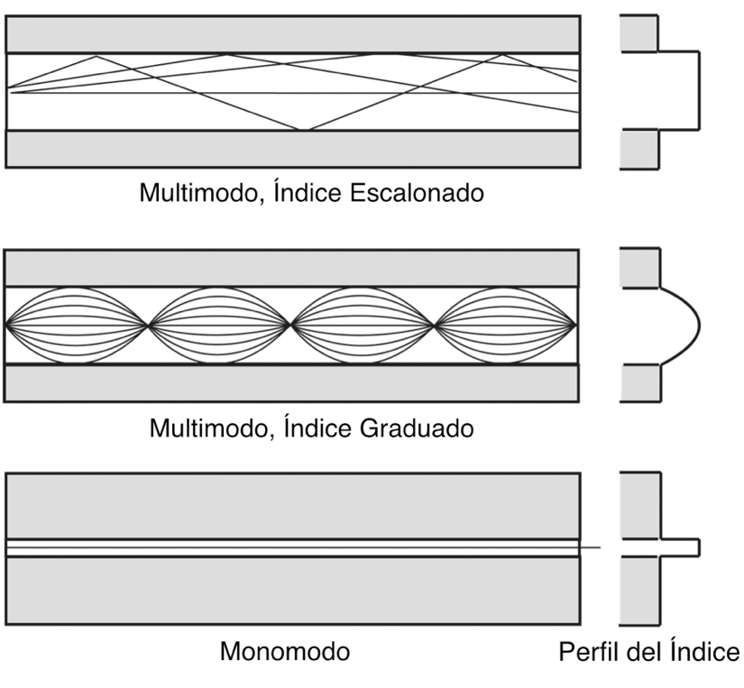
Índice Escalonado Multimodo
La fibra multimodo de índice escalonado fue el primer diseño de fibra. El núcleo de la fibra multimodo de índice escalonado está hecho completamente de un tipo de material óptico y el revestimiento es de otro tipo con características ópticas diferentes. Tiene una atenuación más alta y es demasiado lenta para muchos usos, debido a la dispersión causada por las diferentes longitudes de camino de los distintos modos que viajan por el núcleo. La fibra de índice escalonado no se utiliza mucho: sólo la POF y la PCS/HCS (sílice revestida de plástico o dura, revestimiento de plástico en un núcleo de vidrio) utilizan un diseño de índice escalonado en la actualidad. La POF se utiliza principalmente para enlaces de audio y TV.
Multimodo de Índice Graduado o Gradual
La fibra multimodo de índice graduado utiliza variaciones en la composición del vidrio del núcleo para compensar las distintas longitudes de recorrido de los modos. Ofrece cientos de veces más ancho de banda que la fibra de índice escalonado: hasta unos 4 gigahercios por km de fibra. Hay dos tamaños de fibra multimodo: 50/125 y 62.5/125, donde los números representan el diámetro del núcleo/revestimiento en micrones. La fibra multimodo de índice graduado se utiliza principalmente para instalaciones en predios, LAN, fibra hasta el escritorio, CCTV y otros sistemas de seguridad.
Monomodo
La fibra monomodo reduce tanto el núcleo que la luz sólo puede viajar en un rayo o modo, de ahí el nombre de monomodo. Esto aumenta el ancho de banda hasta casi el infinito, pero en la práctica está limitado a unos 100,000 gigahercios, ¡que sigue siendo mucho! A menudo se dice que la fibra monomodo tiene un núcleo con diámetro de de 8-10 micrones y un diámetro de revestimiento de 125 micrones, lo que puede resultar confuso. Lo que generalmente se denomina como el tamaño del núcleo de la fibra monomodo no es el diámetro del núcleo de vidrio en sí, sino el "diámetro del campo de modo" (MFD en inglés por "mode field diameter"), el cual es el tamaño efectivo del núcleo que depende de la longitud de onda de la luz que se transmite por la fibra.
La fibra monomodo se utiliza para la mayoría de las redes de planta externa, como las de telecomunicaciones, FTTH, CATV, redes municipales y enlaces de datos a larga distancia, como la gestión de redes de servicios públicos. Algunas redes troncales LAN de alta velocidad, normalmente en campus, también utilizan fibras monomodo.
Fibras Insensibles a la Flexión o Dobleces
La atenuación de la fibra óptica es sensible a tensiones como las que se producen al doblar la fibra con demasiada fuerza, especialmente con cables de interconexión y fibras en cajas estrechas.
La tensión hace que la luz salga del núcleo de la fibra provocando pérdidas. Una modificación del perfil de índice de la fibra, añadiendo una capa de vidrio de bajo índice alrededor del núcleo, normalmente llamada zanja óptica, que guía o refleja la luz que se pierde del núcleo de vuelta al núcleo puede hacer que la fibra sea mucho menos sensible a las pérdidas por flexión. Esto puede hacerse tanto con fibras multimodo como monomodo.
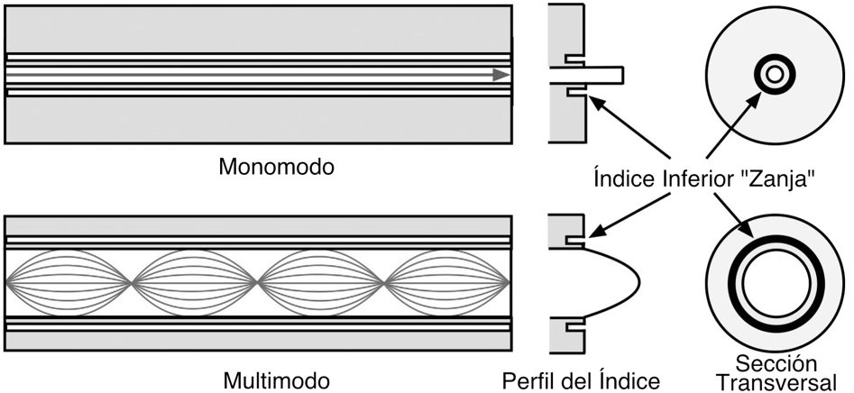
En la actualidad existen muchas fibras insensibles a la curvatura, incluidas la mayoría de las fibras multimodo. Las fibras monomodo utilizadas en patchcords, cables de pequeño diámetro y alto número de fibras, denominados micro-cables, y cables especiales suelen ser fibras insensibles a la curvatura.
Fibras Especiales
Las fibras especiales se han desarrollado para aplicaciones que requieren especificaciones de rendimiento de fibra únicas. Las fibras monomodo dopadas con erbio se utilizan en amplificadores de fibra, dispositivos empleados en redes de muy larga distancia para regenerar señales. Las fibras pueden optimizarse para un ancho de banda en longitudes de onda adecuadas para sistemas DWDM o para invertir la dispersión cromática. Algunas fibras especiales están diseñadas para ser sensibles a parámetros físicos, por lo que pueden utilizarse como sensores para medir ese parámetro. Se trata de un campo activo en el desarrollo de fibras.
Tamaños y Tipos de Fibra
Existen dos tipos básicos de fibra: monomodo y multimodo. Salvo en el caso de las fibras utilizadas en aplicaciones especiales, la fibra monomodo puede considerarse de un solo tamaño y tipo. Si trabajas con cables submarinos o de telecomunicaciones de largo recorrido, es posible que tengas que trabajar con fibras monomodo especiales.
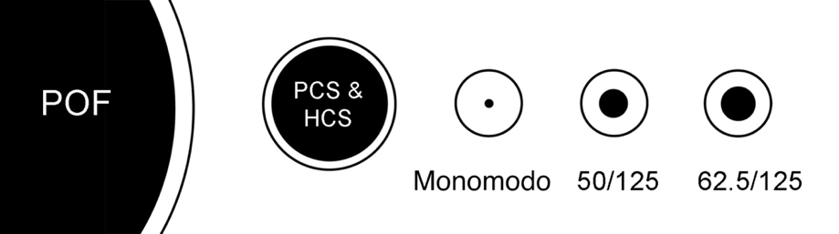
Originalmente, las fibras multimodo se presentaban en varios tamaños, optimizados para distintas redes y fuentes, pero la industria de datos estandarizó la fibra con núcleo de 62.5 a mediados de los 80 (la fibra 62.5/125 tiene un núcleo de 62.5 micrones y un revestimiento de 125 micrones. Ahora se llama fibra estándar OM1. Recientemente, con la generalización de las redes gigabit y 10 gigabit, se ha recuperado un antiguo diseño de fibra. La fibra 50/125 se utilizó desde finales de los 70 con láseres para aplicaciones de telecomunicaciones antes de que estuviera disponible la fibra monomodo. La fibra 50/125 (estándar OM2) ofrece un mayor ancho de banda con las fuentes láser utilizadas en las LAN gigabit y puede permitir que los enlaces gigabit recorran distancias más largas.
Hoy en día, la fibra OM3 o 50/125 optimizada para láser es considerada por la mayoría la mejor opción para aplicaciones multimodo.
Las fibras de índice escalonado más comunes son las fibras ópticas de plástico, que suelen tener un diámetro de 1 mm. La sílice revestida de plástico o sílice revestida dura tiene un revestimiento de plástico sobre un núcleo de vidrio y suele tener 250 micrones de diámetro con un núcleo de 200 micrones.
Mezclando Diferentes Tipos de Fibras
No se pueden mezclar fibras. La diferencia en los núcleos de las fibras puede provocar grandes pérdidas al transmitir de una fibra más grande a una más pequeña.
La transmisión de una fibra más pequeña a una más grande no sufrirá pérdidas debido a los desajustes, ya que la fibra transmisora es más pequeña que la fibra receptora.
Intentar conectar una fibra monomodo a una multimodo puede provocar una pérdida de 20 dB, es decir, el 99% de la potencia. Incluso las conexiones entre 62.5/125 y 50/125 pueden causar una pérdida significativa de 3 dB.
Tipos de Fibra y Especificaciones Típicas
| Núcleo/Revestimiento | Atenuación | Ancho de Banda | Aplicaciones/Notas |
|---|---|---|---|
| Multimodo Indice Graduado | @850/1300 nm | @850/1300 nm | |
| 50/125 micrones (OM2) | 3/1 dB/km | 500/500 MHz-km | Clasificación láser para LAN GbE |
| 50/125 micrones (OM3) | 3/1 dB/km | 2000/500 MHz-km | Optimizada para 850 nm VCSELs |
| 50/125 micrones (OM4) | 3/1 dB/km | 3600/500 MHz-km | Optimizada para 850 nm VCSELs >10Gb/s |
| 50/125 micrones (OM5) | 3/1 dB/km | 3600/500 MHz-km | Optimizada para WDM with VCSELs at 850-950nm |
| 62.5/125 micrones (OM1) | 3/1 dB/km | 160-200/500 MHz- km | Fibra LAN (calidad FDDI) |
| 100/140 micrones | 3/1 dB/km | 150/300 MHz-km | Obsoleta |
| Monomodo | @1310/1550 nm | @1310/1550 nm | |
| 9/125 micrones (OS1, B1.1 o G.652) | 0.4/0.25 dB/km | ~100 Terahertz | Estándar SM fibra mono-modo, Telco/ CATV, enlaces LAN de largas distancias y alta velocidad |
| 9/125 micrones (OS2, B1.3, or G.652) | 0.4/0.25 dB/km | ~100 Terahertz | Fibra con Bajo Indice de Agua |
| 9/125 micrones (B2 or G.653) | 0.4/0.25 dB/km | ~100 Terahertz | Fibra de desplazamiento de dispersión |
| 9/125 micrones (B1.2 or G.654) | 0.4/0.25 dB/km | ~100 Terahertz | Fibra de desplazamiento de corte |
| 9/125 micrones (B4 or G.655) | 0.4/0.25 dB/km | ~100 Terahertz | Fibra de desplazamiento de dispersión no nula |
| 9/125 micrones G.657) | 0.4/0.25 dB/km | ~100 Terahertz | Fibra monomodo resistente a las curvaturas |
| Multimodo de Índice Escalonado | @850 nm | @850 nm | |
| 200/240 micrones | 4-6 dB/km | 50 MHz-km | Núcleo de vidrio con revestimiento plástico, LANs y enlaces lentos |
| POF (fibras ópticas de plástico) | @ 650 nm | @ 650 nm | |
| 1 mm | ~ 1 dB/m | ~5 MHz-km | Enlaces lentos y cortos & vehículos |
OM* se refiere a los tipos TIA, B* se refiere a los tipos IEC, G.* se refiere a los tipos ITU
Especificaciones de Fibra
Las especificaciones habituales de la fibra son el tamaño (diámetro del núcleo/revestimiento en micrones), el coeficiente de atenuación (dB/km en las longitudes de onda adecuadas) y el ancho de banda. El ancho de banda de la fibra multimodo incluye el ancho de banda modal y la dispersión cromática. Las fibras monomodo tienen especificaciones para la dispersión cromática y de polarización. Aunque los fabricantes tienen otras especificaciones para diseñar y fabricar la fibra según las normas del sector, como la apertura numérica (el ángulo de aceptación de la luz en la fibra), la ovalidad (la redondez de la fibra), la concentricidad del núcleo y el revestimiento, etc., estas especificaciones no suelen afectar a los usuarios que especifican las fibras para su compra o instalación.
Atenuación
La principal especificación de la fibra óptica es la atenuación. Atenuación significa pérdida de potencia óptica. La atenuación de una fibra óptica se expresa mediante el coeficiente de atenuación, que se define como la pérdida de la fibra por unidad de longitud, en dB/km. La atenuación de la fibra varía significativamente con la longitud de onda de la luz.
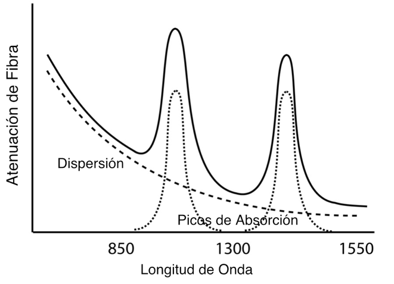
La atenuación de la fibra óptica es el resultado de dos factores, la absorción y la dispersión. La absorción se debe a la absorción de la luz y su conversión en calor por las moléculas del vidrio. Los principales absorbentes son OH+ residual y dopantes utilizados para modificar el índice de refracción del vidrio.
Esta absorción se produce en longitudes de onda discretas, determinadas por los elementos que absorben la luz. La absorción de OH+ es predominante y se produce con mayor intensidad en torno a 1000 nm, 1400 nm y por encima de 1600 nm.
La principal causa de atenuación es la dispersión. La dispersión se produce cuando la luz choca con átomos individuales del vidrio. La dispersión también es una función de la longitud de onda, proporcional a la cuarta potencia inversa de la longitud de onda de la luz. Por tanto, si se duplica la longitud de onda de la luz, se reducen las pérdidas por dispersión en 2 a la 4ª potencia o 16 veces.
Por ejemplo, la pérdida de la fibra multimodo es mucho mayor a 850 nm (llamada de longitud de onda corta), con 3 dB/km, mientras que a 1300 nm (llamada de longitud de onda larga) es de sólo 1 dB/km. Eso significa que a 850 nm se pierde la mitad de la luz en 1 km, mientras que a 1300 nm sólo se pierde el 20%.
Por lo tanto, para la transmisión a larga distancia, es ventajoso utilizar la longitud de onda práctica más larga para una atenuación mínima y una distancia máxima entre repetidores. En conjunto, la absorción y la dispersión producen la curva de atenuación para una fibra óptica de vidrio típica que se muestra arriba.
Los sistemas de fibra óptica transmiten en las "ventanas" creadas entre las bandas de absorción de 850 nm, 1300 nm y 1550 nm, donde la física también le permite a uno fabricar láseres y detectores con facilidad. La fibra de plástico tiene una banda de longitud de onda más limitada, lo que limita su uso práctico a fuentes LED de 660 nm.
La atenuación de la fibra multimodo de índice graduado también depende de cómo se transmite la luz en la fibra, lo que se denomina distribución de potencia de modo.
El ancho de banda también se ve afectado por la distribución de la potencia modal, por lo que a continuación se analizan los efectos modales en la fibra multimodo.
Fibras Insensibles o Resistentes a La Flexión
Cuando se instalan pequeños cables de fibra en interiores y se colocan cables de interconexión alrededor de paneles de conexión, los cables de fibra óptica pueden estar sometidos a curvas cerradas. Esta tensión puede provocar pérdidas por flexión en las fibras e incluso fallos a largo plazo.
Los fabricantes de fibras ofrecen ahora fibras insensibles a la curvatura, tanto monomodo como multimodo, que toleran mejor las curvaturas cerradas. Un fabricante incluso ha hecho una demostración fijando la fibra a tacos de madera con una grapadora, una práctica que le recomendamos encarecidamente que no intente: ¡es sólo para demostraciones! Las fibras insensibles a la flexión son una gran ventaja para los patchcords o siempre que las fibras estén sometidas a tensión, pero debe consultarse a los fabricantes para saber si estas fibras requieren técnicas especiales de empalme, terminación o prueba.
Fibras Bajo Pico de Agua
La fibra de bajo pico de agua o baja atenuación en la región del agua, es el resultado de una cuidadosa fabricación de fibra monomodo para reducir el agua en la fibra (en forma de iones OH-) que provoca una mayor atenuación espectral en torno a 1244 y 1383 nm. En los picos de agua, las fibras heredadas pueden tener coeficientes de atenuación de alrededor de 2 dB/km, mientras que las fibras con bajo pico de agua pueden ser tan bajas como 0.4 dB/km. Con el desarrollo de las fibras de de bajo pico de agua se ha hecho posible la transmisión en toda la gama espectral de 1260 a 1675 nm. La multiplexación por división de longitud de onda gruesa (CWDM) utiliza láseres en toda esta gama de longitudes de onda, mientras que la multiplexación por división de longitud de onda densa utiliza láseres más espaciados en longitudes de onda superiores a 1500 nm.
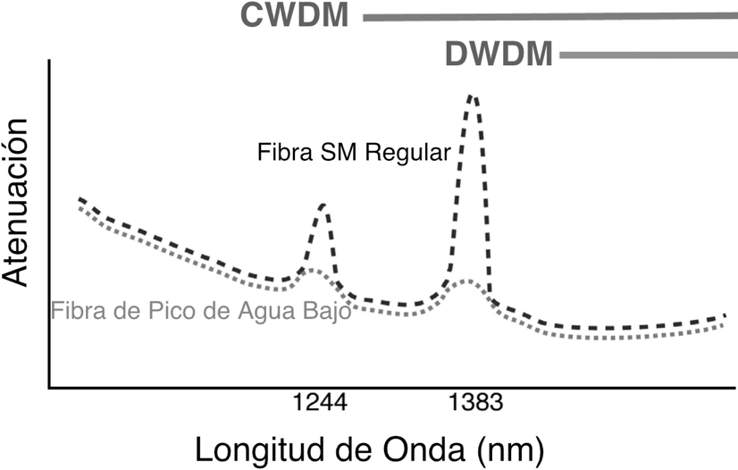
Efectos Modales en la Atenuación de la Fibra Multimodo
En las fibras multimodo, algunos rayos de luz viajan en línea recta por el eje de la fibra mientras que todos los demás se mueven o rebotan dentro del núcleo. En la fibra de índice escalonado, los rayos fuera del eje, denominados "modos de orden superior", rebotan en los límites entre el núcleo y el revestimiento a medida que se transmiten por la fibra. Como estos modos de alto orden recorren una distancia mayor que el rayo axial, son los responsables de la dispersión modal que limita el ancho de banda de la fibra.
En la fibra de índice graduado, la reducción del índice de refracción del núcleo a medida que uno se acerca al revestimiento hace que los modos de orden superior sigan una trayectoria curva que es más larga que el rayo axial (el "modo de orden cero"), pero en virtud del menor índice de refracción lejos del eje, la luz se acelera a medida que se acerca al revestimiento y tarda aproximadamente el mismo tiempo en recorrer la fibra. De este modo, se minimiza la "dispersión" o las variaciones en el tiempo de tránsito de los distintos modos y se maximiza el ancho de banda de la fibra. Sin embargo, el hecho de que los modos de orden superior viajen más lejos en el núcleo de vidrio significa que tienen una mayor probabilidad de ser dispersados o absorbidos, las dos causas principales de atenuación en las fibras ópticas. Por lo tanto, los modos de orden superior tendrán una atenuación mayor que los modos de orden inferior, y una fibra larga que se haya llenado completamente (todos los modos han recibido el mismo nivel de potencia) tendrá una menor cantidad de potencia en los modos de orden superior que un tramo mas corto de la misma fibra.
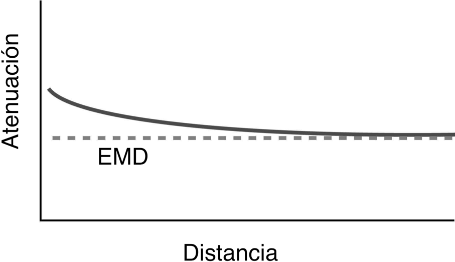
Este cambio en la "distribución modal" entre las fibras de índice graduado largas y cortas se describe como una "pérdida transitoria", y puede suponer diferencias significativas en las mediciones de atenuación que se realizan con la fibra, dependiendo de lo siguiente en las características de la fuente. Las pérdidas transitorias no sólo modifican la distribución modal, sino también el diámetro efectivo del núcleo y la apertura numérica, lo que puede afectar las pérdidas de las terminaciones o los empalmes. El término "distribución modal de equilibrio" (EMD por "equilibrium modal distribution") se utiliza para describir la distribución modal en una fibra larga que ha perdido la mayoría de los modos de orden superior. Una fibra "larga" es una fibra en EMD, mientras que una fibra "corta" tiene todos los modos de orden superior lanzados inicialmente.
Las condiciones modales de la fibra pueden afectar en gran medida a las mediciones de la pérdida de la fibra y de las terminaciones o empalmes
asociados a ella. Se han utilizado varios métodos para controlar las condiciones modales con el fin de que las mediciones sean más repetibles. Estos métodos se tratan en el capítulo sobre pruebas.
Efectos Modales en la Atenuación de la Fibra Monomodo
Aunque el título pueda sonar contradictorio, la fibra monomodo puede transmitir múltiples modos en distancias cortas, quizá de hasta 100 metros. Esto ocurre generalmente con la potencia acoplada de los láseres o después de un conector o empalme. Para evitar los efectos multimodo, se utiliza un filtro de modo formado por un pequeño bucle de la fibra siempre que se realizan mediciones con fibras monomodo.
Dispersión en Fibra Multimodo y Monomodo
Efectos Modales en el Ancho de Banda de la Fibra Multimodo
La capacidad de transmisión de información de la fibra multimodo está limitada por dos tipos de dispersión: modal y cromática. La dispersión modal se debe a que el perfil de índice de la fibra multimodo no es perfecto. El perfil de índice graduado se eligió para permitir teóricamente que todos los modos tuvieran la misma velocidad de grupo o velocidad de tránsito a lo largo de la fibra. Al hacer que las partes exteriores del núcleo tengan un índice de refracción más bajo que las partes interiores de el núcleo, los modos de orden superior se aceleran a medida que se alejan del centro del núcleo, compensando sus mayores longitudes de trayectoria.
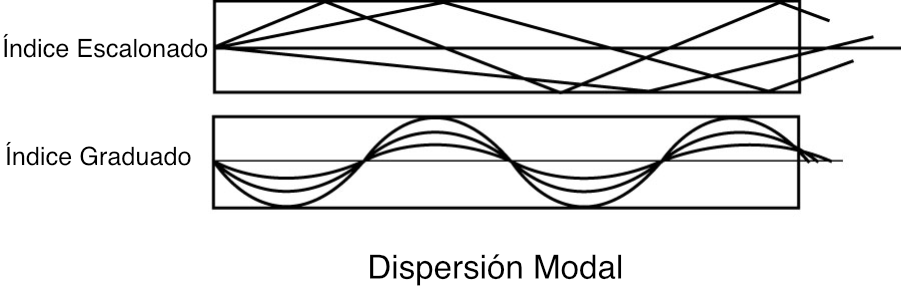
En una fibra idealizada, todos los modos tienen la misma velocidad de grupo (rapidez) y no se produce dispersión modal. Pero en las fibras reales, el perfil de índice es una aproximación y no todos los modos se transmiten perfectamente, lo que permite cierta dispersión modal. Dado que los modos de orden superior tienen mayores desviaciones respecto a una fibra ideal, la dispersión modal de una fibra (y, por tanto, su ancho de banda de láser) tiende a ser muy sensible a las condiciones modales de la fibra. El ancho de banda de una fibra determinada es proporcional a su longitud, ya que la dispersión se produce a lo largo de toda la fibra. Sin embargo, el ancho de banda de las fibras más largas se degrada de forma no lineal a medida que los modos de orden superior se atenúan con mayor intensidad. La preocupación por la dispersión en fibras multimodo se centra hoy en los sistemas de 850 nm que utilizan VCSEL, láseres de emisión superficial de cavidad vertical, la fuente más práctica para enlaces de alta velocidad. A medida que Ethernet LAN y Fibre Channel y otros enlaces de centros de datos se han hecho más rápidos, la fibra multimodo se ha optimizado para esas aplicaciones a lo largo de unos cientos de metros de fibra multimodo. Así, el rendimiento del ancho de banda de la fibra multimodo ha ido aumentando desde la fibra OM1 hasta la OM4, como se muestra en la tabla de especificaciones de fibra anterior.
La mayoría de las fibras se han sometido a pruebas de ancho de banda en fábrica en las que la fuente de prueba sobrecarga la fibra, es decir, todos los modos transportan luz. Avances recientes en fibras optimizadas para láser han hecho que se desarrollen nuevos métodos de prueba, ya sea limitando el relleno modal de la fibra o utilizando métodos de prueba de dispersión que analizan los modos por separado.
Dispersión Cromática
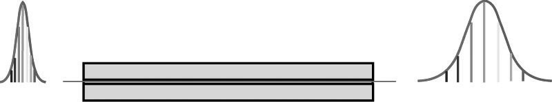
El segundo factor en el ancho de banda de la fibra, la dispersión cromática (CD), afecta tanto a la fibra multimodo como a la monomodo. La dispersión cromática se debe a que las fibras de vidrio transmiten luz de longitudes de onda ligeramente distintas a velocidades diferentes. La relación entre la velocidad de la luz en un medio y la velocidad en el vacío define el índice de refracción o índice de refracción del material. En el caso de la fibra óptica, el índice de refracción efectivo es de aproximadamente 1.45, por lo que la velocidad de la luz en el vidrio es aproximadamente 2/3 de la velocidad de la luz en el vacío. Pero el índice de refracción, y por tanto la velocidad de la luz en la fibra, es función de la longitud de onda de la luz, el principio que todos conocemos al ver cómo un prisma descompone la luz en un espectro.
Recuerda que un prisma reparte el espectro de la luz incidente, ya que ésta viaja a velocidades diferentes según su color y, por tanto, se refracta en ángulos diferentes. La forma habitual de expresarlo es que el índice de refracción del vidrio depende de la longitud de onda. Por tanto, un perfil de índice graduado multimodo cuidadosamente fabricado sólo puede optimizarse para una única longitud de onda, normalmente cerca de 850 o 1300 nm, y la luz de otros colores sufrirá dispersión cromática. Incluso la luz del mismo modo sufrirá dispersión si es de longitudes de onda diferentes.
La dispersión cromática es un gran problema en la fibra multimodo con fuentes LED, que tienen amplias salidas espectrales, a diferencia de los láseres, que concentran la mayor parte de su luz en un estrecho rango espectral. Los primeros sistemas de alta velocidad, como FDDI a sólo 100 Mb/s, pero basados en LED a 1300 nm, sufrían una dispersión cromática tan intensa que la dispersión cromática era un gran factor ya que la dispersión modal y la transmisión se limitaba a sólo dos km de fibra 62.5/125. Los sistemas multimodo de alta velocidad más recientes utilizan fibra optimizada para fuentes VCSEL de 850 nm en las que la dispersión modal es la principal consideración.
Dispersión en Fibra Monomodo
La fibra monomodo sólo transmite un modo de luz, por lo que la dispersión modal no es un problema. Sin embargo, la dispersión cromática también afecta a los enlaces largos en sistemas monomodo, incluso con láser, por lo que la fibra y las fuentes se optimizan para minimizar la dispersión cromática en los enlaces de larga distancia. A medida que los sistemas monomodo se han hecho más largos y rápidos, ha cobrado importancia otro factor de dispersión, la dispersión del modo de polarización (PMD). La PMD se produce debido a las diferencias de velocidad de la luz polarizada que se propaga en la fibra.
Causas de la Dispersión Cromática (CD por siglas en inglés [chromatic dispersion])
Hay dos factores que causan la dispersión cromática en las fibras monomodo: la dispersión del material y la dispersión de la guía de ondas.
La dispersión de materiales está causada por la variación del índice de refracción en un material determinado, el vidrio en este caso, a lo largo de la longitud de onda. Observando el gráfico a continuación, la variación del índice de refracción en todo el espectro cubierto por la fibra óptica puede parecer pequeña, sólo unos pocos puntos porcentuales, pero cuando se trata de pulsos de muy alta velocidad a distancias muy largas puede sumar.
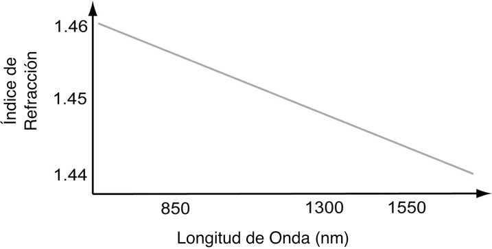
Dispersión de La Guía de Ondas
La dispersión de la guía de ondas es un poco más compleja. En la fibra monomodo, la longitud de onda de la luz no es mucho mayor que el núcleo de la fibra y (dejaremos de lado la física compleja), como resultado, la luz que viaja por la fibra lo hace en un área que supera el diámetro del núcleo, lo que llamamos el "diámetro del campo de modo" de la fibra. El diámetro del campo de modo es una función de la longitud de onda de la luz; las longitudes de onda más largas viajan en un diámetro de campo de modo mayor. Por tanto, parte de la luz viaja por el núcleo geométrico de la fibra y parte por el revestimiento. Como el núcleo está hecho de un vidrio con un índice de refracción más alto que el revestimiento, la luz del revestimiento viaja más rápido que la del núcleo. Las longitudes de onda más largas tienen mayores diámetros de campo de modo, por lo que sufren más dispersión del material.
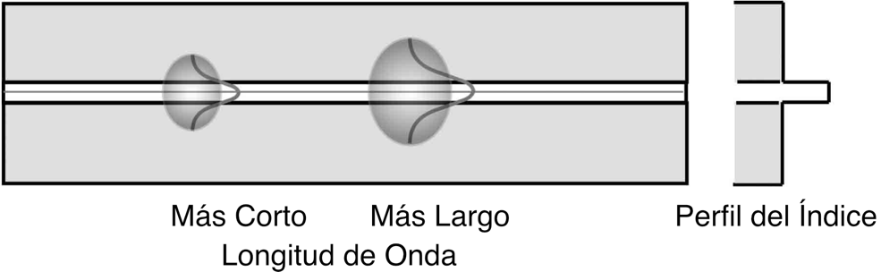
Dispersión en Fibras por Diseño
La dispersión del material y de la guía de ondas tienen variaciones opuestas con la longitud de onda, por lo que un diseño cuidadoso de los materiales de la fibra y de los perfiles de índice permite que la fibra pueda tener una "longitud de onda de dispersión cero". A ambos lados de esa longitud de onda, la dispersión aumenta. La importancia de la dispersión cromática depende de la aplicación de la fibra. Como resultado, se han desarrollado diferentes fibras SM para los requisitos de aplicaciones específicas. La tabla de tipos de fibra que aparece al principio del capítulo muestra los tipos de fibras monomodo que se utilizan actualmente y cómo están optimizadas.
Compensación de la Dispersión
Como ya se ha mencionado, las características de dispersión de una fibra pueden ser manipulada por los materiales y el diseño de la fibra. De hecho, se pueden fabricar fibras que tengan CD inversa a las fibras típicas y de mayor magnitud. Por tanto, se puede añadir un tramo de fibra de compensación de dispersión a un enlace, normalmente en un repetidor (amplificador óptico) que invierte la CD del tramo de fibra anterior. Estas fibras suelen tener pérdidas y sensibilidad a la curvatura elevadas, por lo que, como alternativa, se puede utilizar un compensador de dispersión fabricado con un componente especializado llamado rejilla de bragg, pero su uso es más limitado y su coste más elevado.
Dispersión Cromática en la Planta de Cables
Como ocurre con cualquier otro componente, los parámetros de rendimiento de la fibra óptica pueden variar de un lote a otro, por lo que una planta de cable concatenado de gran longitud con muchas fibras diferentes tendrá una dispersión cromática de extremo a extremo que es una integración de la CD de todas las fibras individuales. Por lo tanto, es probable que se compruebe la CD de la fibra en enlaces de larga distancia después de la instalación o antes de actualizar un enlace a una electrónica de mayor velocidad binaria.
Dispersión del Modo de Polarización
La dispersión por modo de polarización (PMD) en fibra monomodo es un poco más compleja. La polarización es un fenómeno de la luz que viaja en un medio como una onda con componentes en ángulos rectos. Algunos materiales, como la fibra óptica de vidrio, tienen un índice de refracción diferente para cada uno de esos componentes de la onda luminosa, lo que se denomina birrefringencia. Y un índice de refracción diferente significa que la luz viaja a una velocidad diferente, por lo que en la visualización más simple, PMD en fibra se parece al dibujo de abajo, donde cada componente de la luz polarizada viaja a una velocidad diferente, lo que provoca dispersión. La magnitud de la PMD en una fibra se expresa como esta diferencia, que se conoce como retardo diferencial de grupo (DGD) y se denomina Δτ ("delta Tau").
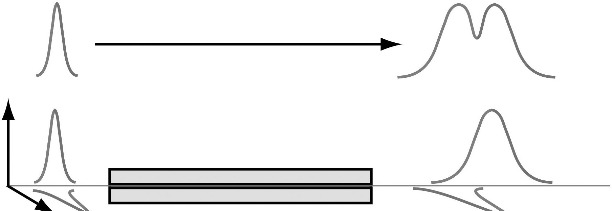
La PMD está causada por la birrefringencia de la fibra, en la que pueden influir dos factores: la birrefringencia del material y la birrefringencia de la guía de ondas, similar a la CD, pero más compleja. La birrefringencia de la guía de ondas está causada por variaciones geométricas en la fibra, como la concentricidad o la elipticidad. La birrefringencia del material se debe principalmente a la tensión en la fibra.
Birrefringencia de la Guía de Ondas
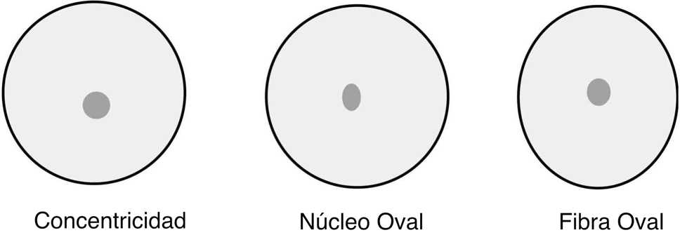
Birrefringencia del Material
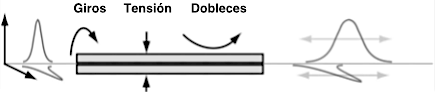
La PMD es un problema complejo en la fibra óptica instalada. En una fibra larga concatenada, cada fibra puede tener diferentes características de guía de ondas y birrefringencia del material causadas por las características aleatorias de cada fibra en el enlace y las variaciones de la tensión en la fibra. Las variaciones son especialmente notables en la fibra aérea, donde la PMD puede variar considerablemente en función de la temperatura y la velocidad del viento.
La PMD provoca un ensanchamiento de los impulsos y/o fluctuaciones en la señal eléctrica recibida, lo que puede causar errores en la recepción de las señales. Dado que la PMD puede variar con el tiempo, a menudo se añade un margen adicional de 1 a 3 dB al presupuesto de potencia para tener en cuenta la variación de la PMD.
La PMD es un problema importante a medida que las velocidades de transmisión de datos en enlaces de larga distancia aumentan a 40 Gb/s y 100 Gb/s. Desgraciadamente, no existen sistemas fiables de compensación de la PMD, por lo que la única solución es probar los enlaces que se van a actualizar para detectar la PMD utilizando uno o varios de los métodos de prueba estandarizados.
Preguntas de Repaso
Elección Múltiple
Identifique la opción que mejor complete el enunciado o responda a la pregunta.
______ 1. La fibra monomodo tiene un núcleo ______ portador de luz que la fibra multimodo.
- Más pequeño
- Más grande
- Mismo tamaño
______ 2. ¿Cuál es el tamaño del núcleo de la fibra monomodo?
- 5 mm
- 9 micrones
- 50 micrones
- 63.5 micrones
______ 3. La fibra monomodo tiene ______ ancho de banda que la fibra multimodo.
- Más
- Menos
- El mismo
______ 4. ¿Qué longitudes de onda son adecuadas para su uso con fibra multimodo?
- 650 y 850 nm
- 850 y 1300 nm
- 850 y 1310 nm
- 1310 y 1550 nm
______ 5. ¿Cuánto mide el diámetro del núcleo de la fibra multimodo OM2 y OM3?
- 50 micrones
- 62.5 micrones
- 62.5 mm
- 9 mm
______ 6. ¿Cuál de las siguientes especificaciones de la fibra es más importante para el usuario y constituye un factor importante en las pruebas?
- Atenuación
- Ancho de banda
- Apertura numérica
- Concentricidad núcleo-revestimiento
______ 7. El mayor contribuyente a la atenuación de la fibra es ________.
- Absorción
- Dispersión
- Pérdidas por flexión
- Microcurvas
______ 8. ¿Qué fibra suele tener el núcleo más grande?
- POF
- Índice de escalonado multimodo
- Índice graduado multimodo
- Monomodo
9. La pérdida de una fibra multimodo de índice graduado es mayor en.
- 850 nm
- 1300 nm
- 1310 nm
- 1550 nm
______ 10.¿Qué tipo de dispersión afecta tanto a la fibra monomodo como a la multimodo?
- Modal
- Diferencial
- Cromática
- Modo de polarización
Estudios y Proyectos Adicionales
Examinar muestras de fibra óptica, incluyendo fibra desnuda, fibra con recubrimiento primario, fibra con recubrimiento ajustado y POF, siguiendo los procedimientos de seguridad. Acoplar la luz de una linterna o puntero láser a través de POF para ver cómo se transmite la luz.